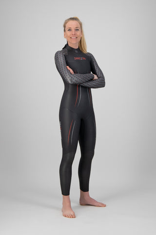
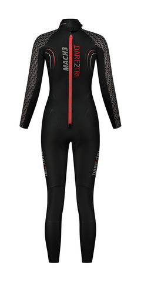
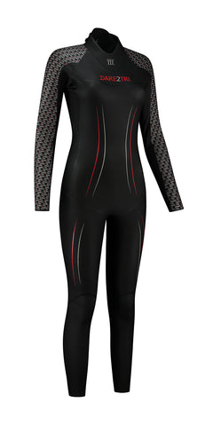
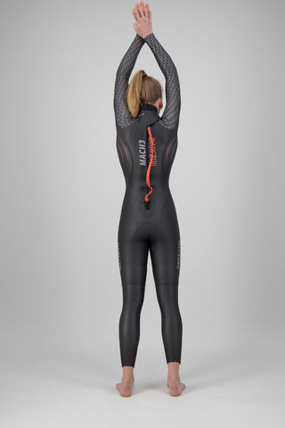
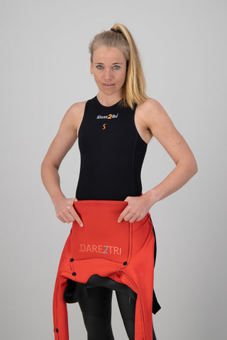
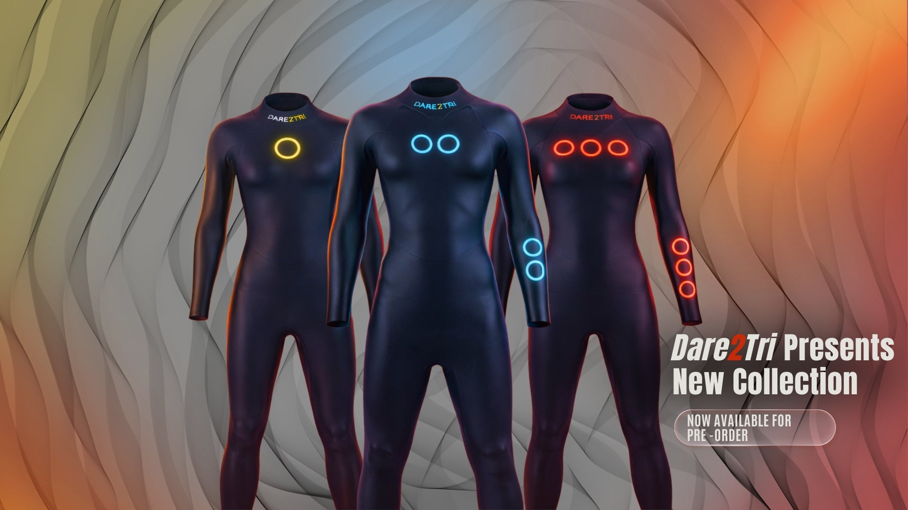

1 / 7






| 1 dag | € 15 |
| Weekend (vr-ma) | € 30 |
| Midweek (ma-vr) | € 45 |
| Hele week | € 65 |
Dit is een oudere Mach 3 FM-versie van het Nederlandse triathlon-merk Dare 2 Tri. Het pak hoort bij de Mach 3-lijn, geïmporteerd door Sport Import Europe BV. De huidige Mach 3-modellen op de markt (zoals de Mach3 0.7 en S.7) zijn opvolgers met geavanceerdere features — dit FM-model is eenvoudiger in opzet en daardoor ook lichter geprijsd op de 2dehands-markt.
De Mach 3-lijn is bedoeld voor triatleten en open-water-zwemmers. Voor dit specifieke pak: het verkeert in vrijwel nieuwe staat — geen gebruikssporen, geen beschadigingen, geen reparaties.
Belangrijk: we hebben geen officiële productfoto's of specificatie-fiche van dit specifieke FM-model meer kunnen vinden online. De foto's hierboven zijn van een nieuwer Mach 3-model. Voor een eerlijk beeld van het pak: vraag via WhatsApp om foto's van het werkelijke exemplaar voordat je beslist.
Alle wetsuits in de IkLeerBorstcrawl-shop zijn tweedehands. We delen ze in drie klassen in zodat je vooraf weet wat je mag verwachten:
Stuur een berichtje op WhatsApp en we reageren doorgaans binnen een paar uur. Voor dit pak raden we sterk aan eerst foto's van het werkelijke exemplaar op te vragen.
WhatsApp ons